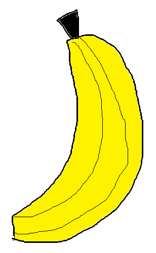
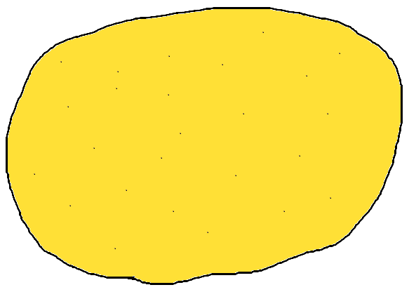
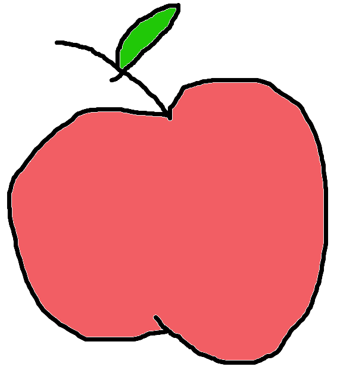
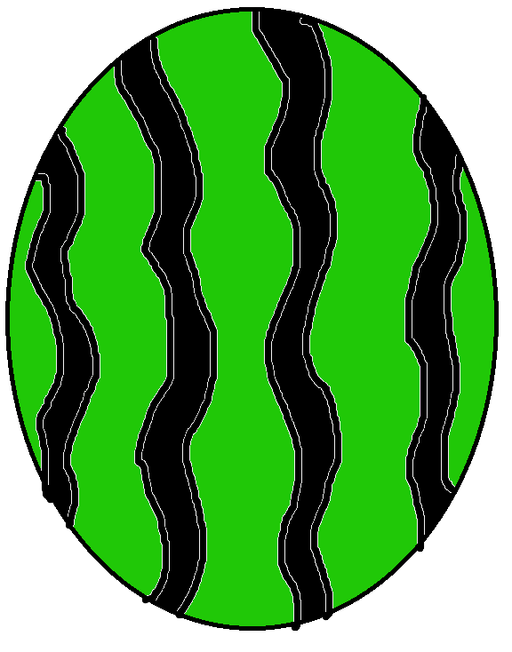
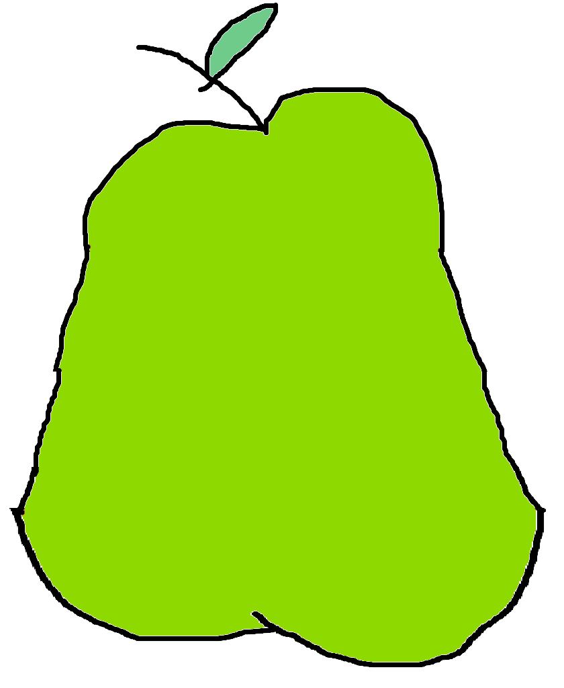

Spēlē ir pieci augļu veidi: banāni,
apelsīni, āboli, arbūzi un bumbieri.
Katram no tiem ir savs punktu diapazons.
Banāni - (17) 
Apelsīni - (15) 
Āboli - (20) 
Arbūzi - (25) 
Bumbieri - (12) 
Spēlē ir 2 grozi, katrs uz viena spēlētāja. Spēlē gadījuma kārtā parādās 10 augļi, katrs atšķirīga veida.
Katrs spēlētājs gājienā paņem sev augli un ievieto to grozā tad nākamais spēlētājs veic savu gājienu.
Jā spēlētājs paņem arbūzs viņš nevar ņemt arbūzs, abolu un banānu nakama gajiena momenta.
Jā spēlētājs paņem bumbieris, tad spēlētaja kopējo punktu skaits palielinās uz 20%.
Jā spēlētājs paņem banānu, tad spēlētaja kopējo punktu skaits samazinās par 10%.
Spele beidzās, kad uz ekrāna nebūs augļu.
Uzvar tas, kurš savāks vislielāko punktu skaitu.